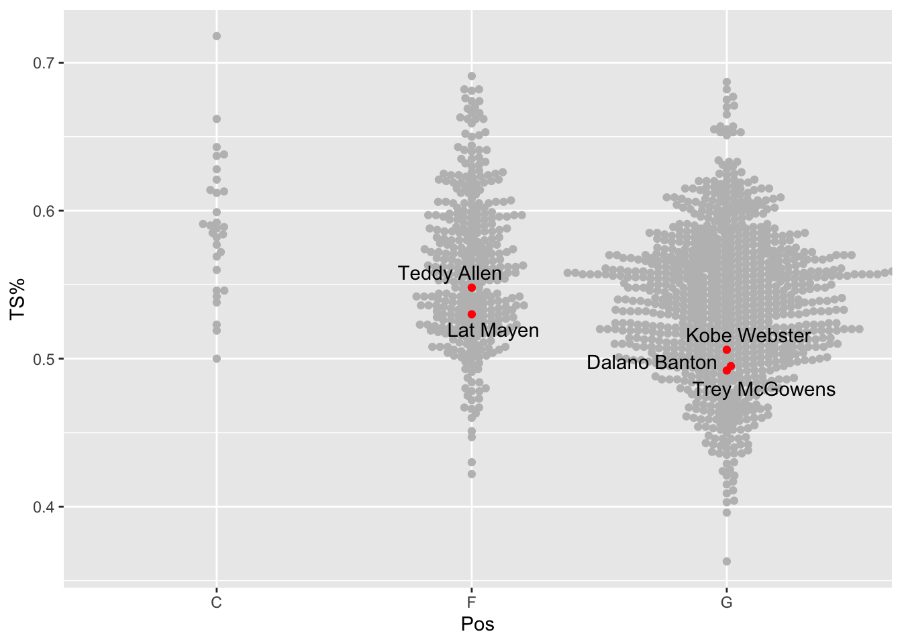

library(tidyverse)
library(ggbeeswarm)
library(ggrepel)23 Beeswarm plots
A beeswarm plot is sometimes called a column scatterplot. It’s an effective way to show how individual things – teams, players, etc. – are distributed along a numberline. The column is a grouping – say positions in basketball – and the dots are players, and the dots cluster where the numbers are more common. So think of it like a histogram mixed with a scatterplot crossed with a bar chart.
An example will help.
First things first: Install ggbeeswarm with install.packages("ggbeeswarm")
Like ggalt and ggrepel, ggbeeswarm adds a couple new geoms to ggplot. We’ll need to load it, the tidyverse and, for later, ggrepel.
Another bit of setup: we need to set the seed for the random number generator. The library “jitters” the dots in the beeswarm randomly. If we don’t set the seed, we’ll get different results each time. Setting the seed means we get the same look.
set.seed(1234)So let’s look at last year’s basketball team as a group of shooters. The team was disappointing – we know that – but what kind of a problem is it going to be that we’re returning basically no one from it?
For this walkthrough:
First we’ll load our player data.
players <- read_csv("data/players21.csv")Rows: 5410 Columns: 58
── Column specification ────────────────────────────────────────────────────────
Delimiter: ","
chr (9): Team, Player, Class, Pos, Height, Hometown, High School, Summary, ...
dbl (49): #, Weight, Rk.x, G, GS, MP, FG, FGA, FG%, 2P, 2PA, 2P%, 3P, 3PA, 3...
ℹ Use `spec()` to retrieve the full column specification for this data.
ℹ Specify the column types or set `show_col_types = FALSE` to quiet this message.We know this data has a lot of players who didn’t play, so let’s get rid of them.
activeplayers <- players %>% filter(MP>0) Now let’s ask what makes a good shooter? The best measure, in my book, is True Shooting Percentage. It’s a combination of weighted field goal shooting – to account for three pointers – and free throws. Our data has TS%, but if we include all players, we’ll have too many dots. So let’s narrow it down. A decent tool for cutoffs? Field goal attempts. Let’s get a quick look at them.
summary(activeplayers$FGA) Min. 1st Qu. Median Mean 3rd Qu. Max.
0.00 14.00 69.00 95.38 152.00 512.00 The median number of shots is 69, but we only really care about good ones. So let’s use 152 attempts – the third quartile – as our cutoff.
shooters <- activeplayers %>% filter(FGA > 152)Now we’ve got enough for a beeswarm plot. It works very much like you would expect – the group value is the x, the number is the y. We’re going to beeswarm by position, and the dots will be true shooting percentage.
ggplot() + geom_beeswarm(data=shooters, aes(x=Pos, y=`TS%`), color="grey")You can see that there’s a lot fewer centers who have attempted more than 152 shots than guards, but then there’s a lot more guards in college basketball than anything else. In the guards column, note that fat width of the swarm is between .5 and .6. So that means most guards who shoot more than 152 shots end up in that area. They’re the average shooter at that level. You can see, some are better, some are worse.
So where are the Nebraska players in that mix?
We’ll filter players on Nebraska who meet our criteria.
nu <- players %>%
filter(Team == "Nebraska Cornhuskers") %>%
filter(FGA>152) %>%
arrange(desc(`TS%`))Five Cornhuskers took more than 152 shots. Number returning this season? Three.
But how good are they as true shooters?
When you add another beeswarm, we need to pass another element in – we need to tell it if we’re grouping on the x value. Not sure why, but you’ll get a warning if you don’t.
ggplot() +
geom_beeswarm(
data=shooters,
groupOnX=TRUE,
aes(x=Pos, y=`TS%`), color="grey") +
geom_beeswarm(
data=nu,
groupOnX=TRUE,
aes(x=Pos, y=`TS%`), color="red")Ooof. Best we can muster is middle of the fat part. Who is that?
This is where we can use ggrepel. Let’s add a text layer and label the dots.
ggplot() +
geom_beeswarm(
data=shooters,
groupOnX=TRUE,
aes(x=Pos, y=`TS%`), color="grey") +
geom_beeswarm(
data=nu,
groupOnX=TRUE,
aes(x=Pos, y=`TS%`), color="red") +
geom_text_repel(
data=nu,
aes(x=Pos, y=`TS%`, label=Player))
So Teddy Allen was our best shooter by true shooting percentage. The rest were below average shooters for that volume of shooting.
23.1 A few other options
The ggbeeswarm library has a couple of variations on the geom_beeswarm that may work better for your application. They are geom_quasirandom and geom_jitter.
There’s not a lot to change from our example to see what they do.
ggplot() +
geom_quasirandom(
data=shooters,
groupOnX=TRUE,
aes(x=Pos, y=`TS%`), color="grey") +
geom_quasirandom(
data=nu,
groupOnX=TRUE,
aes(x=Pos, y=`TS%`), color="red") +
geom_text_repel(
data=nu,
aes(x=Pos, y=`TS%`, label=Player))Quasirandom spreads out the dots you see in beeswarm using – you guessed it – quasirandom spacing.
For geom_jitter, we need to remove the groupOnX value. Why? No clue.
ggplot() +
geom_jitter(
data=shooters,
aes(x=Pos, y=`TS%`), color="grey") +
geom_jitter(
data=nu,
aes(x=Pos, y=`TS%`), color="red") +
geom_text_repel(
data=nu,
aes(x=Pos, y=`TS%`, label=Player))geom_jitter spreads out the dots evenly across the width of the column, randomly deciding where in the line of the true shooting percentage they appear.
Which one is right for you? You’re going to have to experiment and decide. This is the art in the art and a science.